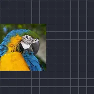

Bewegingsonscherpte

Vervaagt de laag in de richting waarin hij beweegt, draait en groeit, op basis van keyframes en bewegingseffecten zoals Automatisch schudden en Oscilleren. Afstemming schaalt de vervaging. Het voorbeeld toont een snellere vervaging, tenzij Volledige onscherpte aan staat.
Bewegingsonscherpte veegt een laag uit langs de manier waarop hij beweegt, draait en groeit. Het leest de beweging uit de keyframes van de laag en uit bewegingseffecten zoals Automatisch schudden en Oscilleren, dus je hoeft niets met de hand te tekenen. Afstemming maakt de vervaging sterker of zwakker, en met de schakelaars Positie, Schaal en Hoek kies je welke soorten beweging vervagen.
Het voorbeeld in de editor toont een snelle benadering. Zet Volledige onscherpte aan in de voorbeeldstrook om de nauwkeurige versie te zien; exports zijn altijd nauwkeurig. Zie Het editorscherm.
Instellingen
| Instelling | Type | Bereik | Standaard |
|---|---|---|---|
| Afstemming | Getal | 0 tot 4 | 1 |
| Positie | Aan of uit | – | Aan |
| Schaal | Aan of uit | – | Aan |
| Hoek | Aan of uit | – | Aan |